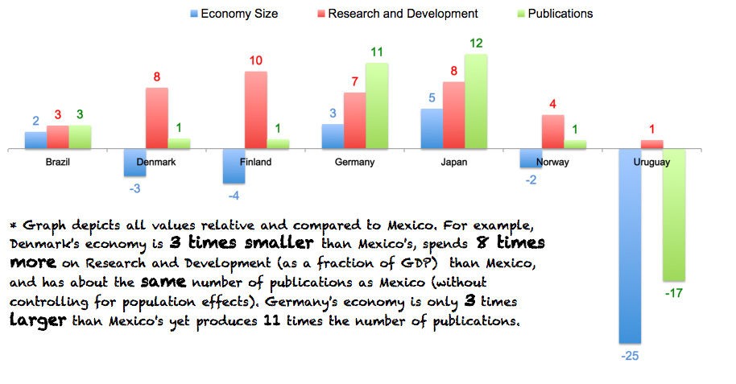

When news came to me that the country was 'reforming' its energy sector, I was excited about the process. I imagined a reform that would shift the country away from a fossil fuel based economy, and transition Mexico into the 21st Century. I imagined a strong focus on developing clean tech funds, policy and financial mechanisms for supporting the growth of renewable energy, and better distribution mechanisms for the massive wealth that oil and gas usually leave behind.
As I came to the last pages of the twenty page document, however, I was amazed its lack of vision. There was very little imagination. Its main strategy was on exploiting shale gas and not renewable energy. Its main focus was on economic growth and not development. There seemed to be little thought going towards integrated resource planning; but the usual promises were there. Shale gas' wealth would eradicate extreme poverty, fight hunger, and improve the quality of our health services. It would also allocate funds to education, and to developing a highly skilled labor force, one that would be able to meet the country's pressing energy challenges.
We've heard this same story with oil before, but how far has it taken us?

In 1979, then President Jose Lopez Portillo (1976 - 1982) announced to the world that Mexico had begun exploiting 'Cantarell', the world's third largest oil field at the time (just behind the Ghawar and Burgan fields of Saudi Arabia and Kuwait). This bounty came with promises of jobs, technological development, commitment to industrialization, and sustainable city-building. Above all, Lopez Portillo (and his team of experts) stressed that this windfall of wealth would be reinvested in Mexico to guarantee a future 'beyond Oil'.
It took 24 years for Cantarell to reach 'peak oil' status. This means that in 2004 Mexico's largest oil field had reached its maximum rate of petroleum extraction, after which it entered a state of terminal decline. Like the graphs below depict, Mexico has experienced a 'net surplus' of oil since the 1980's meaning that it has produced more oil than it consumes, although this has been decreasing over time. The US and Norway 'peaked' in 1970 and 2001 respectively, and Brazil has become a net exporter of oil since 2009. Brazil's success, however, has been led by a stubborn decisiveness to dramatically reduce oil consumption, a strong emphasis on research and development, and a focus on non-fossil fuels alternatives for national consumption. Since 2003 it followed an aggressive ethanol blending policy - and today 80% of the cars in the country run on blended fuel. It's not oil that has put Brazil where it is today, its more about where Brazil has been putting its money - and how.
Things are not so bad, though. If Mexico had saved its oil revenues derived from the net balance of the production and consumption of oil, it could today have amassed a massive wealth of over 300 billion dollars. Its obvious that Mexico didn't save all this money, though. Like Lopez Portillo said, and the current PRI administration promises, oil revenues were spent on education, poverty alleviation, research and development, and Mexico's future 'beyond oil'. Indeed Mexicans had their fair share of the oil through government expenditures on goods and services, cash benefits, and subsidies, but how well did Mexico do?

In 2002, Mexico begun collecting statistics related to poverty and inequality through the ministry of social development, but it wasn't until 2006 when the national council for the evaluation of social development policy (CONEVAL) was created and geared towards the erradication of poverty in the country. CONEVAL reports that over the last few decades poverty levels have gone down except for two time periods: the Tequila Crisis of 1994-1996 and the 'financial crisis' 2006-2009. Although both can be linked to the variability of oil prices, the latter is very important as it was a time period when Mexico's oil wealth increased (due to high oil prices) but basic food items and inflation were high, it was a time when poverty also increased. Similarly, as Mexico's oil wealth has been increasing over time the country's Gini coefficient (a measure of a country's overall level of inequality) has stayed practically the same with 10% of the population with the highest incomes owning over 40% of the wealth in the country, while the bottom 10% only own about 1% of this wealth. This hasn't changed since the 90s despite Mexico's tremendous oil wealth and unrelenting promise of economic growth.
Why does inequality matter? It matters because in statistical terms your life time earnings (and hence the quality of your education, health care services, and many of the aspirations you can have to in life) are predetermined before your birth (80%) by your citizenship and the income class of your parents. How does this relate to an oil/fossil fuel dependent economy? As oil prices rise, it is the poorest who hurt the most: low income families in Mexico spend over 50% of their income on food and transport, while the rich only spend 20%. As oil prices increase, disposable household income that could go towards health an education decreases further as prices for basic food items increases. In Mexico, the bottom 10% spend only 5% of their income on education, while the 10% spends close to 20%. In terms of vulnerability to economic shocks, it is always the poor and the middle class who suffers most. An economy that depends on fossil fuels does not benefit the 'people', particularly in a country where 60% of the population is denominated 'Clase Baja'.
Mexico has certainly been spending money on education to reduce this inequality. However, compared to other countries and both as a fraction of both the size of the economy and in per capita expenditures not only does Mexico spend a smaller fraction (it was surpassed by Brazil in 2004) but its investment in primary education has stayed practically the same in the last decade, and its spending on secondary education has steadily gone down since 1998. This is of concern since primary and secondary education are the key to solid understanding and development of science, math, and other development skills. Results from the OECD's PASI international math and scientific literacy exams show that indeed Mexico's performance has improved, but is still well below both the OECD's average and below Uruguay's performance - a country that spends much less money per student but performs much better than Mexico. The most applauded innovation in Mexico's education sector wasn't the recent 'education reform', but a professor from Matamoros (featured in Wire) who dismissed archaic teaching methods in favor of open source platform methods for his students. If indeed shale gas and an 'energy reform' will improve education we should expect results, not promises.
The promise of developing a highly skilled workforce in Mexico has also been there for some time - but has this promise been backed my petrodollars? As a percentage of GDP, larger economies like Brazil, Japan, and the United States spend from three to eight times as much as Mexico in R&D. Smaller economies like Norway, Finland, and Denmark also emphasize expenditure in R&D four to nine times more than Mexico. Even Uruguay, with an economy 24 times smaller than Mexico's manages to spend more on R&D as a fraction of GDP. Even without controlling for population effects all these countries have more scientific related publications than Mexico, except for Uruguay which has a population 40 times smaller than Mexico's. Do these numbers suggest that Mexican researchers and students get the support they deserve to transform into a highly skilled workforce?
Still, even with this lack of support - Mexican researchers and innovators seem to be making progress (Mexico was amongst the largest exporters of IT services in the world in 2013, just behind India); this year's Global Innovation Index also shows that Mexico increased its position by 16 points since 2012. Costa Rica, Bulgaria, Montenegro, China, and Moldova, however, country's with relatively smaller income per capita scored higher innovation points than Mexico - how can this be? It seems that being richer, and throwing more money at problems doesn't fix them (in fact, the report suggests that resource-rich countries in oil, gas, or some other natural resources crowds out investment in other productive sectors and hinder innovation). Instead the report suggests that successful middle income country's regarded as 'innovation learners' (India, Uganda, Jordan, Kenya, and Tajikistan, for example) demonstrate improvements made to institutional frameworks, a skilled labour force with expanded tertiary education, a deeper integration with global credit investment and trade markets, and a sophisticated business community. For an economy of over $1 trillion dollars, Mexico only has 15 venture-capital funds which only invested in 25 projects in 2011. The Bay Area alone (California) invested over $2 billion in the first quarter of 2013. What Mexican researchers and innovators need is support - institutions and incentives - that can fund projects from technology to market. Not promises.
Its no surprise that Mexico's 'energy reform' faces doubt and opposition. For decades, US, British and even Dutch companies exploited and extracted Oil from the country, in a time period marred by internal political conflict and tax evasion. It is also not clear how taxing PEMEX has benefited Mexicans - it is taxed close to 60% - , but where that money has gone is a big question mark. It certainly hasn't gone into eradicating poverty, improving education, and building a highly technical workforce. The debate should be focused somewhere else. The question shouldn't be how much to tax PEMEX, but where to invest those funds. The question is not whether foreign companies should mingle in PEMEX's business - but how to take advantage of their involvement. Shale Gas and Deep Oil should only be developed under complete and utter transparency, where every penny is tracked (The 'Mexican Commission for Resource Transparency' should be created) and made sure that revenues are reinvested into the country. The environment (SEMARNAT) and energy ministries (SENER) should also develop a portal - that is readily accessible - that compares the short term vs. long term economic benefits and environmental effects of investment in fossil fuels vs aggressive renewable energy penetration. Sure, Mexico promises 35% Renewables by 2024, but this vision lacks details, obligations, and concrete measures for implementation. Nicaragua, a country with an economy over 150 times smaller than Mexico's, has a much bolder, innovative, and promising energy scenario than Mexico.
How about really thinking creatively? Using money wisely is the first step. This new reform should encourage investment in public-private partnerships and the creation of a new government funded agency (similar to ARPA-E) that focuses on the development of high-risk/high-reward energy technologies that can be taken to market in Mexico. It should be focused on building (funding and investing) partnerships between universities and industry, and should incorporate 'innovation' components into grant applications, and give preferential tax treatment to university-industry partnerships that show that their innovations are leading Mexico towards energy independence, rather than maximizing revenues. There should a clear focus directed to integrated resource planning approaches (innovative financing, planning, and management approaches), renewable energy technologies, storage, and transportation (electric vehicles) - this is the future. Mexico has the money for this, and empty promises don't cut it anymore. We should expect results, specific measures and targets, and investment in the future. I'm looking forward to it.